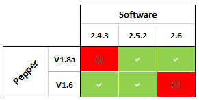

Release Notes - 2.6¶
Pepper meets Android!¶
This is a very special release, the first to support Google’s Android OS and Google Mobile Services.
Google account supported¶
The Getting Started Wizard has been reworked to allow users to associate their robot with a Google account, while simplifying the robot configuration overall.
Google Mobile Services supported¶
Pepper‘s display now supports Google Mobile Services.
Android apps running on Pepper‘s display¶
Pepper supports regular Android applications to be run and activities to be shown on his display.
Important notices¶
Check compatibility¶
2.6 version is only compatible with the hardware of the Pepper 1.8a.
Choregraphe and former SDKs not available¶
2.6 focus is on Android, so new development tools have been designed in order to provide Choregraphe-like functionalities at hand for Android Studio.
Pepper SDK plug-in for Android Studio¶
Android Developers can now take advantage of the robot, and can use a dedicated set of tools integrated in Android Studio.
These tools, designed along the lines of Choregraphe‘s well-known functionalities, such as the animation editor and view, the trajectory editor, the robot browser and the robot view.
For further details, see: Pepper SDK for Android.
And also: